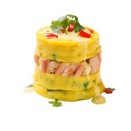

La causa limeña es un plato típico del Perú preparado con papa amarilla prensada, aderezada con ají amarillo, limón, aceite y sal.
Generalmente se rellena con pollo, atún o mariscos, y se acompaña con palta, huevo y mayonesa. Es un plato fresco, muy popular en la costa peruana y perfecto para climas cálidos.
